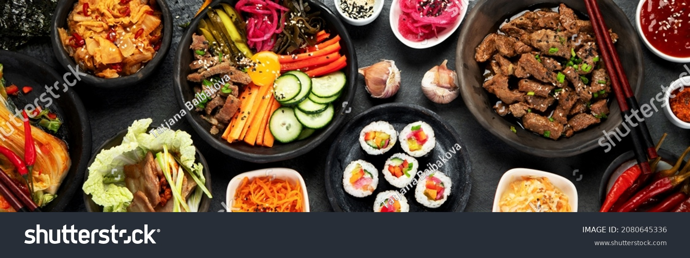

Easy Homemade Pad Thai

This Pad Thai recipe is a delicious and easy way to spice up pasta night!
With all the ingredients in this recipe, don't stress out if you don't have them or can't find them. Cooking is a journey and with a few substitutions you might make something even better than the original!
Key Ingredients
- 8 oz. thai rice noodles
- 2 eggs or egg substitute
- 2 tbsp tamarind paste (can substitute with worcestershire sauce)
- 3 tbsp neutral cooking oil
- 2 tbsp fish sauce (can substitute with soy sauce and lime juice)
- 1 tbsp oyster sauce (can substitue with teriyaki sauce or more fish sauce)
- 2 green onions
Optional Ingredients
- protein - shrimp, chicken, beef, pork, tofu, etc.
- vegetables - bean sprouts are common but use whatever you have
- toppings - lime, peanuts, chili oil
- spice - birds eye chili's or thai green chili's are authentic but whatever spice you enjoy can work
Instructions
- Let's make our sauce. Add the Tamarind paste, 2 tbsp of water, fish sauce, and oyster sauce to a small mixing bowl. Stir until combined. Set aside.
- Add oil to your skillet and cook your protein. At about the same time begin boiling your noodles according to the directions on the packaging.
- Cook your eggs in the skillet and then add vegetables and green onion whites once protein is close to done. When noodles are finished immedietly drain and put into skillet.
- Pour your sauce over your stir fry and mix well until thoroughly coated. Remove from heat and top with peanuts and a lime wedge.
And just like that it's done! A delicious and unique dinner in less than 20 minutes!